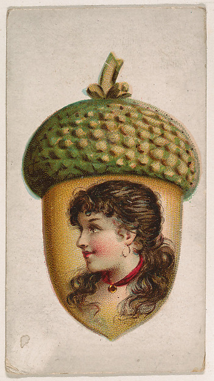
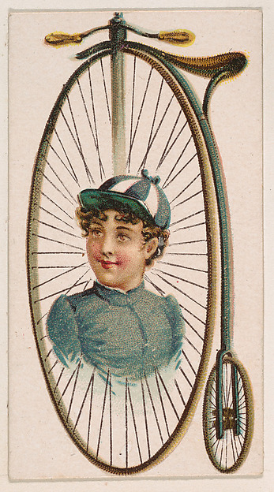
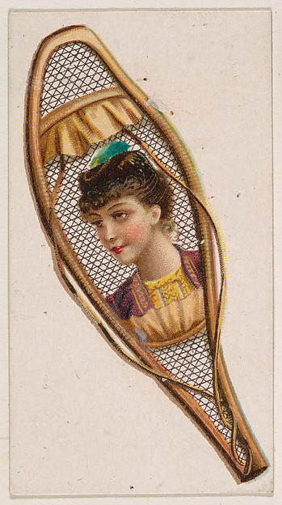
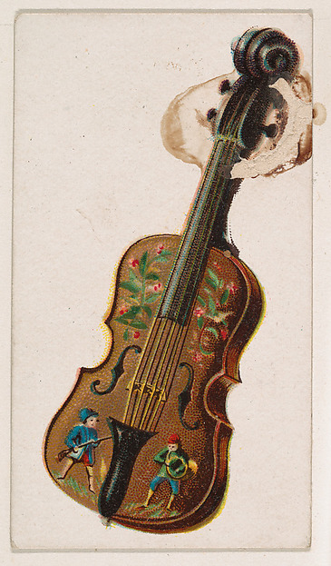
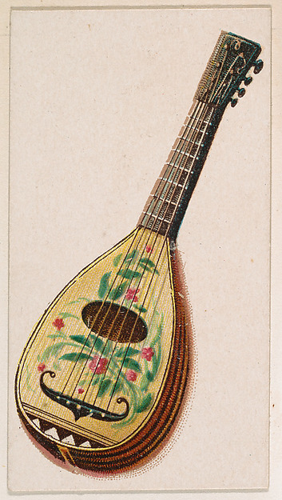

Kinney Brothers / 1889
Where is
the figure?
Five card frontsEach sheet is recorded as 7.3 × 4 cm. Here, each reproduction is 4 cm wide.
Novelties series / Type 5Same sheet size / different placements





The object is easy to name. What, in each card, makes it a novelty?
Return to the violin ↗